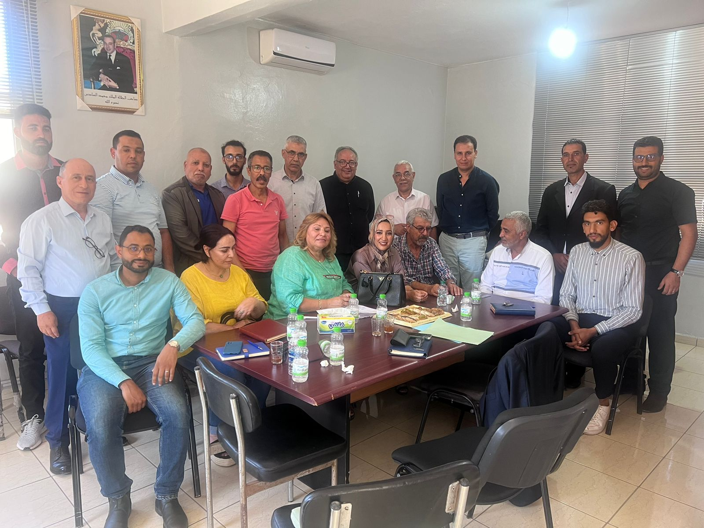
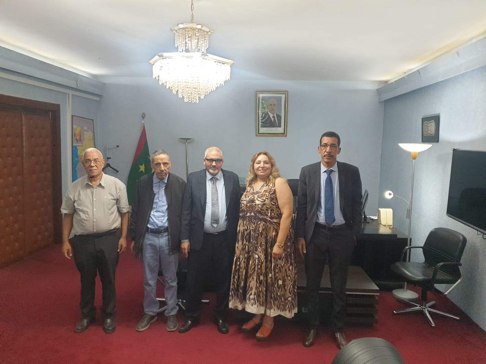
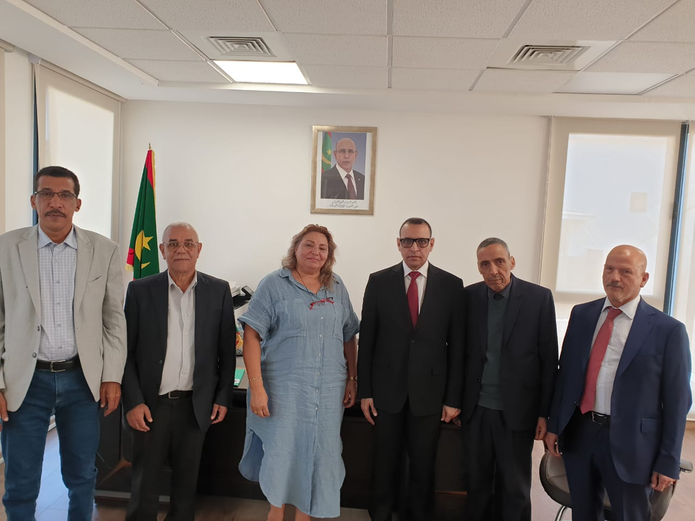
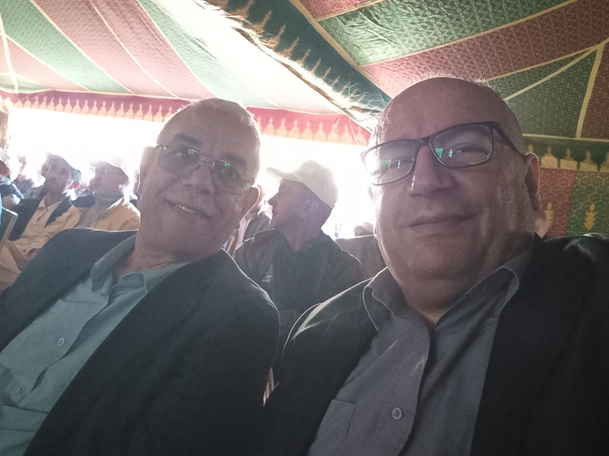

Le Cluster Filière Fromage-Agro (CFFA) rassemble agriculteurs-éleveurs, coopératives, sociétés industrielles, chercheurs et institutions pour transformer chaque litre de lait en valeur durable — au service du développement rural et de l'excellence industrielle.
Plus de 1 000 femmes rurales accompagnées dans la filière.

Tradition
Savoir-faire
Science
R&D continue
Terroir
6 régions
Des chiffres qui témoignent de l'ancrage du CFFA dans le tissu rural marocain.
0
Agriculteurs-éleveurs
0
Femmes productrices
0
Coopératives agricoles
0
Sociétés partenaires
0
Régions couvertes
+10 Mds DH
Investis dans la filière
~700 000 L
Lait/jour (avant Covid)
Aujourd'hui, moins de 4 % du lait marocain est transformé en fromage, contre environ 38 % au niveau mondial. Notre vision : remplacer l'importation par le Made in Morocco, structurer une filière équitable, et faire émerger une marque marocaine forte.
Lire notre visionTransformer les excédents en fromages diversifiés et compétitifs.
Remplacer l'importation par des produits nationaux compétitifs.
Relier producteurs, coopératives, transformateurs et distributeurs.
Créer des emplois durables et améliorer les revenus agricoles.
Du lait fermenté au fromage à pâte dure — une gamme issue de nos coopératives et sociétés industrielles.
Quelques instantanés de notre écosystème : assemblées, missions internationales, coopération Maroc-Mauritanie.



Recherche
Flammes du Cluster
Innovations pour la qualité du lait & l'affinage.
Territoire
6 régions
Casablanca-Settat (siège), Rabat-Salé-Kénitra, Fès-Meknès, Béni Mellal-Khénifra, Marrakech-Safi, Laâyoune-Sakia El Hamra.
Partenariat
3 unités
Aysa FMCG · Bladi · GIE Bassin de Ouargha.
Stratégie
Maroc-Mauritanie
Initiative Royale Atlantique, coopération Sud-Sud.
Nous connectons agriculteurs-éleveurs, coopératives, sociétés industrielles, chercheurs et institutions dans une dynamique nationale d'innovation et de structuration.
Min. Agriculture
ONSSA
ONCA
IAV Hassan II
INRA
U. Hassan II
PME / start-up / grandes entreprises, institutionnels, enseignement-recherche — accélérez votre impact au sein d'un écosystème national reconnu.